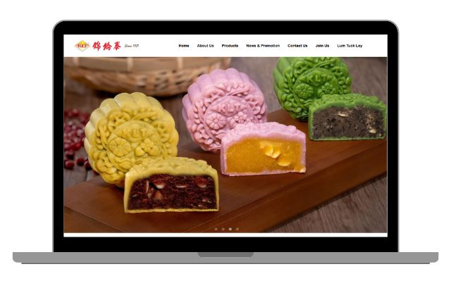
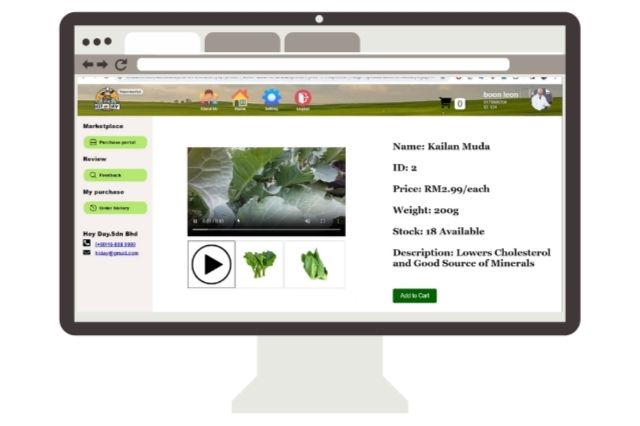
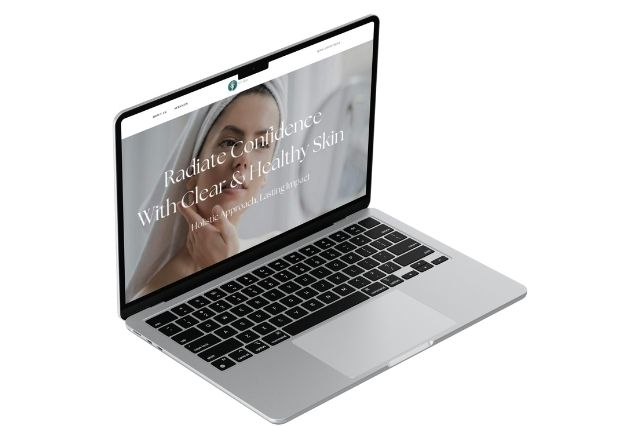

A portfolio, verified
I make the numbers
answer back.
Microsoft Certified Power BI Data Analyst. I turn messy operational data into reporting people actually trust, and I can show you the receipts.
Siew Sheng Yao
Kuala Lumpur, Malaysia
Available March 2027
Chapter I
The facts a hiring manager screens on, stated plainly.
A data analyst who finishes the job, then measures it.
A Microsoft Certified Power BI Data Analyst (PL-300) reading Computer Science (Data Analytics) at Asia Pacific University on a First-Class Honours track, graduating April 2027. I have spent the last two years inside a real reporting function, not a classroom exercise.
I am looking for Data Analyst, BI Analyst, Data Engineer, and graduate-programme roles, available full-time from March 2027. The chapters that follow are the evidence, not the pitch.
- Certification
- Microsoft PL-300
- Degree
- First-Class track
- Current
- FrieslandCampina
- Languages
- EN · 中文 · BM
Chapter II
Anyone can say data-driven. The difference is a number you can check.
Three services, each tied to something I actually shipped.
Data analysis and insight: I clean, validate and analyse business data in Python, SQL and Excel, and translate what stakeholders ask for into decisions they can act on.
Power BI and reporting: interactive dashboards built on DAX, Power Query and proper data modelling, replacing the manual workbooks that quietly eat a team's week.
AI and automation: machine learning and NLP applied to real operational text, with the pipeline tuned so it is cheap enough to run, not just a demo.
Chapter III
The receipts, counted out.
0hrs / yr
Reporting I automated, saving roughly 750 hours a year
Power BI pipelines that replaced manual reporting at FrieslandCampina's Service Centre Asia Pacific. Time a team no longer spends rebuilding the same workbook.
FrieslandCampina · 2025
0+ tickets
IT tickets analysed with NLP to find real automation
Machine learning and BERTopic across 58,000+ support tickets, producing 6 validated automation use cases and an estimated 5.93% potential reduction in volume.
FrieslandCampina · 6 validated use cases
0% lower
Token usage cut on the AI pipeline
The same analysis, tuned to run at 48% lower token cost. The difference between a model that looks clever in a slide and one that is cheap enough to keep running.
FrieslandCampina · AI pipeline
0+ countries
Supported by one IT 360 dashboard
A financial and operational dashboard serving 10+ cluster heads and supporting more than 20 countries, built to hold up under that spread.
FrieslandCampina · IT 360
Verified by


Chapter IV
Beyond the dashboards, a body of work.
Six things I built, shipped and can still show you running.
Live sites, an AI chatbot, a full-stack store. Each one links to the real thing, not a screenshot.


The rest is on GitHub, and in the conversation I would rather be having with you.
If the receipts held up, let's talk.
I am open to Data Analyst, BI Analyst, Data Engineer and graduate roles from March 2027. The quickest way to reach me is a short note to shengyao330@gmail.com, or a message on LinkedIn. I read both, and I reply.
Siew Sheng Yao · Data analyst
Kuala Lumpur · Available March 2027
EN · 中文 · BM